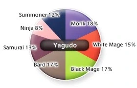
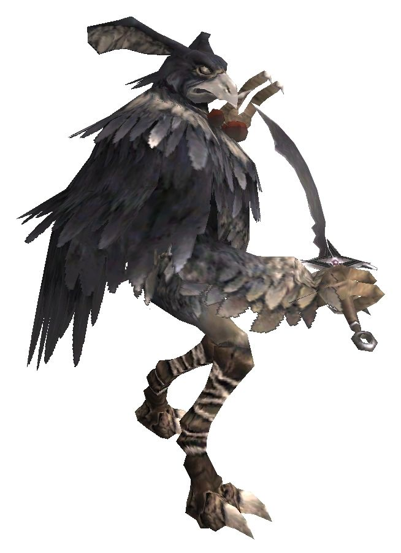

Level 75 reference · Zenith rules


Image source
The Yagudo are a race of birdlike bipeds inhabiting the continent of Mindartia.
Violently devout and ritualistic, the Yagudo are a race of religious zealots, their society appearing to be based on a strict religious hierarchy. Yagudo evince little technological development, living instead in austere constructions of wattle-and-daub, as well as cliff side caves.
Their most formidable architectural construct is Castle Oztroja, which may be more appropriately considered a temple than a castle, for it exists as a gateway to the location of the current manifestation of their Godhead, Tzee Xicu.
They use few tools or weapons, except for occasional clubs and swords, and wear no armor, excepting the fact that magic-using classes cover their faces with ceremonial masks.
While apparently unconcerned with efforts of conquest, as the Orcish race is, the Yagudo's primary conflict with outsiders comes as a response to disputes over the right to occupy the land which they consider to be hereditary and traditionally their own.
The Yagudo hold a tentative treaty of non-aggression with the Tarutaru nation of Windurst, representing the only case of such between a Beastman race and a developed nation.
General Information |
 Image source |


Special Attacks
| Special Abilities | Original and Zilart Areas | |||
| Sweep - 10' AOE physical damage and Stun, absorbed by Utsusemi | ||||
| Feather Storm - Single Damage, chance of Poison | ||||
| Double Kick - Single Damage, chance of Stun | ||||
| Parry - Defense Boost | ||||
| Doom - Single target Doom, wears off if NM is defeated before countdown finishes. Only used by Vanguard Notorious Monsters. | ||||
| Note: Notorious Monsters in this family may use all of the above and/or additional unique special abilities. | ||||
Notorious Monsters in Family

Monsters in Family
See Also
Adapted from Eden Wiki: Category:Yagudo · Contributors and history · CC BY-SA 4.0. Revision 2624. Layout, links and optional background text adapted for Zenith.
Articles
- Aa Nawu the Thunderblade
- Buu Xolo the Bloodfaced
- Chaa Paqa the Profound
- Coo Keja the Unseen
- Cuu Doko the Blizzard
- Dee Wapa the Desolator
- Duu Masa the Onecut
- Eyy Mon the Ironbreaker
- Fee Jugu the Ramfist
- Gessho
- Gii Jaha the Raucous
- Goo Pake the Bloodhound
- Haa Pevi the Stentorian
- Hoo Mjuu the Torrent
- Huu Xalmo the Savage
- Juu Duzu the Whirlwind
- Juu Zeni the Poisonmist
- Kee Taw the Nightingale
- Koo Buzu the Theomanic
- Laa Yaku the Austere
- Loo Hepe the Eyepiercer
- Maa Febi the Steadfast
- Mee Deggi the Punisher
- Moo Ouzi the Swiftblade
- Muu Febi the Steadfast
- Nuu Kofu the Gentle
- Pee Qoho the Python
- Poo Yozo the Babbler
- Quu Domi the Gallant
- Tzee Xicu the Manifest
- Vaa Huja the Erudite
- Vanguard Assassin
- Vanguard Chanter
- Vanguard Exemplar
- Vanguard Inciter
- Vanguard Liberator
- Vanguard Ogresoother
- Vanguard Oracle
- Vanguard Partisan
- Vanguard Persecutor
- Vanguard Prelate
- Vanguard Priest
- Vanguard Salvager
- Vanguard Sentinel
- Vanguard Skirmisher
- Vanguard Visionary
- Voo Tolu the Ghostfist
- Vuu Puqu the Beguiler
- Wuu Qoho the Razorclaw
- Xoo Kaza the Solemn
- Yaa Haqa the Profane
- Yagudo Abbot
- Yagudo Acolyte
- Yagudo Archpriest
- Yagudo Assassin
- Yagudo Avatar
- Yagudo Chanter
- Yagudo Conductor
- Yagudo Conquistador
- Yagudo Discipilnant
- Yagudo Drummer
- Yagudo Eradicator
- Yagudo Flagellant
- Yagudo Follower
- Yagudo Herald
- Yagudo High Priest
- Yagudo Initiate
- Yagudo Inquisitor
- Yagudo Interrogator
- Yagudo Kapellmeister
- Yagudo Knight Templar
- Yagudo Lutenist
- Yagudo Mendicant
- Yagudo Missionary
- Yagudo Muralist
- Yagudo Oracle
- Yagudo Persecutor
- Yagudo Piper
- Yagudo Prelate
- Yagudo Prelatess
- Yagudo Priest
- Yagudo Prior
- Yagudo Scribe
- Yagudo Sentinel
- Yagudo Templar
- Yagudo Theologist
- Yagudo Votary
- Yagudo Zealot
- Yoo Mihi the Haze